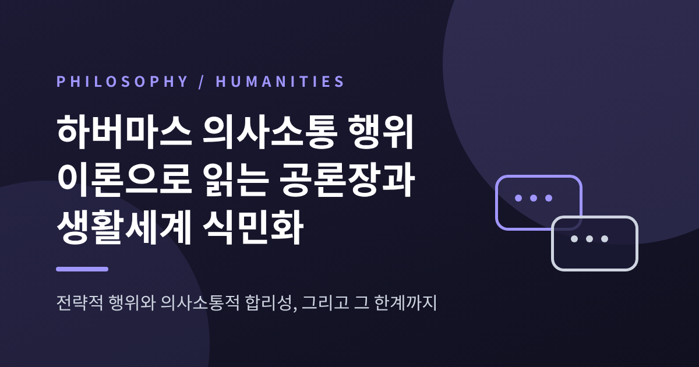
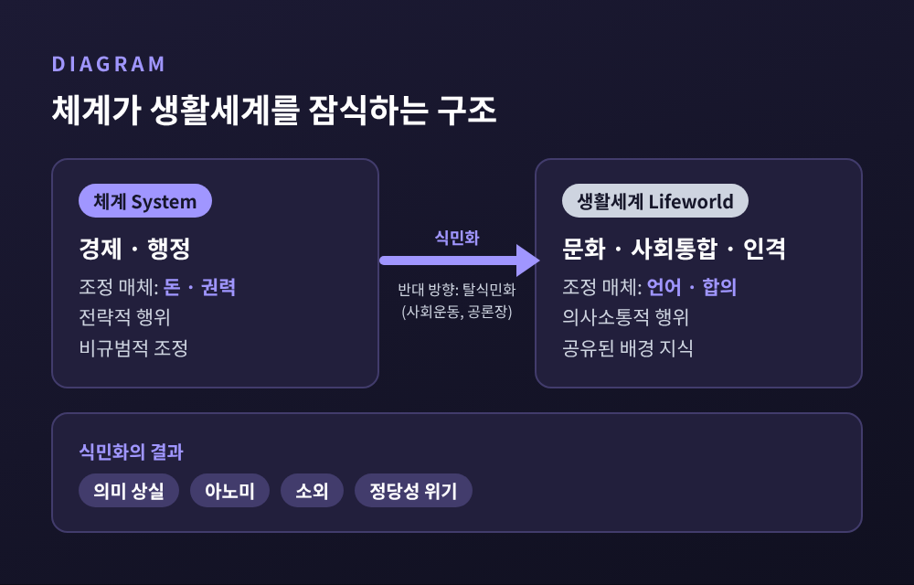
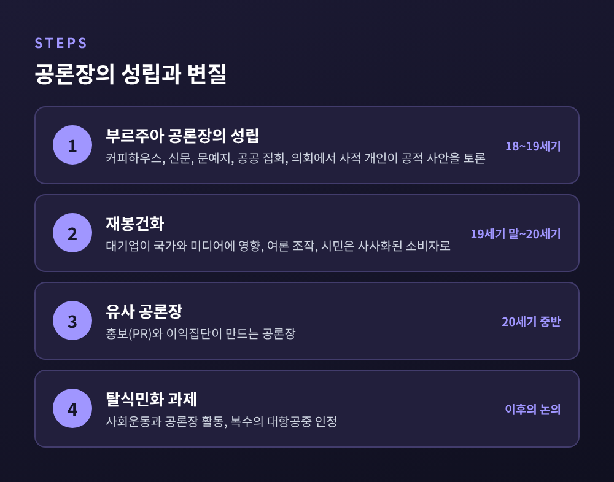

하버마스 의사소통 행위 이론으로 읽는 공론장과 생활세계 식민화

오늘은 하버마스의 의사소통 행위 이론과 공론장 개념을 정리해 보려 합니다.
핵심은 간단합니다. 사람의 행위에는 "이기려는 말"과 "이해하려는 말"이 있고, 하버마스는 후자가 사회를 지탱하는 바탕이라고 보았습니다.
그리고 돈과 권력의 논리가 이 바탕을 잠식하는 현상을 '생활세계의 식민화'라 불렀습니다. 비판과 한계까지 함께 짚겠습니다.
■ 2026년 3월, 하버마스가 남긴 것
위르겐 하버마스는 1929년 독일 뒤셀도르프에서 태어나 2026년 3월 14일 슈타른베르크에서 향년 96세로 세상을 떠났습니다.
브리태니커는 그를 20세기 후반 가장 중요한 독일 철학자로 소개합니다. 프랑크푸르트학파의 비판이론을 잇는 사상가이기도 합니다.
대표작은 두 권입니다. 『공론장의 구조변동』(1962)과 『의사소통 행위 이론』(1981)입니다.
앞의 책은 시민이 공적 문제를 토론하는 공간을, 뒤의 책은 그 토론을 가능하게 하는 합리성의 정체를 다룹니다.
한 사람의 이론이지만 하나의 질문으로 이어집니다. 사회는 무엇으로 유지되는가. 하버마스의 답은 "합리적 대화의 능력"이었습니다.
■ 전략적 행위와 의사소통적 행위
하버마스는 행위를 지향에 따라 나눕니다.
도구적·전략적 행위는 '성공'을 향합니다. 상대에게 영향을 주어 내 목적을 이루는 일입니다. 언어를 쓰더라도 마찬가지입니다.
의사소통적 행위는 '합의', 곧 서로의 이해를 향합니다. 스탠퍼드 철학 백과사전은 그의 표현을 이렇게 옮깁니다. 이해에 도달함은 인간 말의 내재적 목적이라는 것입니다.
가상의 장면 하나를 떠올려 보겠습니다.
회의에서 한 사람이 결론을 정해 두고, 반대할 사람에게 불리한 이야기만 골라 던집니다. 전략적 행위입니다.
다른 사람은 근거를 내놓고, 더 나은 반론이 나오면 자기 의견을 고칠 준비를 합니다. 인터넷 철학 백과사전은 바로 이 '더 나은 논증 앞에서 목표를 수정할 열린 태도'를 의사소통 합리성의 특징으로 설명합니다.
목적을 가장 효율적으로 달성하는 합리성보다 한 걸음 넓은 합리성인 셈입니다.
하버마스는 의사소통적 행위가 '기본 형태'이고, 전략적 행위는 거기에 기생한다고 주장했습니다.
다만 이 점은 뒤에서 다시 다루겠습니다. 스탠퍼드 백과사전에 따르면 많은 해석자는 이 주장이 충분히 논증되지 않았다고 봅니다.
■ 모든 말은 세 가지를 요구한다
의사소통이 왜 합의로 향할 수 있는지 설명하는 장치가 '타당성 주장'입니다.
모든 화행은 세 가지 주장을 함께 제기한다는 것입니다.
첫째, 진리입니다. 객관 세계에 대해 참을 말하고 있다는 주장입니다.
둘째, 정당성입니다. 사회 세계의 규범에 비추어 옳다는 주장입니다.
셋째, 진실성입니다. 화자가 속마음 그대로 말하고 있다는 주장입니다.
듣는 사람이 말을 받아들이면 세 층위에서 동시에 합의가 이루어진다고 합니다.
이견이 계속되면 '담론'으로 넘어갑니다. 주장을 명시하고, 이유를 들어 확인하는 단계입니다.
여기서 타당성은 논리학의 진리보존이 아니라 '이유를 통한 수용 가능성'을 뜻합니다.
참고로 이상적 담화 상황의 조건도 소박합니다. 유능한 화자라면 누구나 참여할 수 있고, 어떤 주장이든 문제 삼을 수 있으며, 내외부의 강제가 없어야 합니다.
합의는 물질적 힘이 아니라 논증의 힘에 기대야 한다는 이야기입니다.
■ 체계가 생활세계를 잠식할 때
하버마스는 사회를 두 층으로 나눕니다.
생활세계는 서로 이해하게 해 주는 공유된 문화적 배경, 당연하게 여기는 규범과 이해의 저장고입니다. 여기서는 의사소통을 통한 합의로 사회가 통합됩니다.
체계는 경제와 행정입니다. 돈과 권력이라는 조정 매체로 움직이고, 행위자의 의식적 의도와 무관하게 행위가 맞물립니다.
문제는 체계가 제 영역을 넘을 때 생깁니다.
체계의 메커니즘이 상징적 재생산이 걸린 영역, 곧 문화·사회통합·인격이 재생산되는 영역에서 의사소통에 의한 통합을 밀어내는 것. 이것이 '생활세계의 식민화'입니다.
스탠퍼드 백과사전은 그 결과를 의미 상실, 아노미, 소외, 정당성 위기로 정리합니다.
하버마스는 이 개념을 루카치의 물화 개념을 다시 쓴 것으로 설명합니다. 인간관계가 사물의 관계처럼 굳어 보이는 현상입니다.

한 가지 눈여겨볼 점이 있습니다. 하버마스는 베버처럼 이 과정을 불가피하다고 보지 않았습니다.
식민화는 우연적이고 선택적이므로 '탈식민화'의 여지가 있다고 보았고, 그 주체로 신사회운동과 공론장의 활동을 꼽았습니다.
저항 모델도 달라졌습니다. 『의사소통 행위 이론』에서는 시민사회가 체계를 둘러싸는 '포위 모델'이었다면, 『사실성과 타당성』에서는 민주적 입법이 생활세계와 체계를 잇는 '수문 모델'로 바뀝니다.
■ 공론장은 어떻게 생기고 어떻게 무너졌나
공론장은 국가·경제·가족 사이에서 사적 개인들이 공적 사안을 토론하고 여론을 만드는 영역입니다.
『공론장의 구조변동』은 18~19세기 유럽의 부르주아 공론장을 그립니다. 커피하우스, 신문, 문예지, 공공 집회, 의회가 그 무대였고, 경향신문은 살롱과 출판문화를 함께 언급합니다.
시민들은 사적 이익을 공동선과 잇는 토론의 규범을 키웠고, 거기에는 평등·연대·자유의 이상이 부분적으로 담겼습니다.
예전엔 시민이 토론하는 공중이었습니다. 지금은, 하버마스의 진단으로는, 소비하는 개인이 늘었습니다.
19세기 말 독점자본주의에서 대기업이 국가와 미디어에 영향력을 행사하고 여론을 조작할 수 있게 되었고, 시민은 사사화된 소비자가 되었다는 분석입니다. 하버마스는 이를 '재봉건화'라 불렀습니다. 홍보와 이익집단이 만든 유사 공론장이라는 설명도 있습니다.

『공론장의 구조변동』은 나치 체제 붕괴 뒤 자유로운 정치 토론을 처음 접한 서독 사회에 큰 반향을 일으켰다고 전해집니다.
하버마스가 평생 의사소통이라는 주제를 붙든 데에는 선천성 구개열로 말이 불편했던 개인사가 영향을 주었을 것이라는 언급도 있습니다. 다만 이는 해석일 뿐이니 단정은 삼가겠습니다.
■ 비판과 한계
하버마스의 이론은 찬사만큼 반론도 받아 왔습니다. 주요한 것만 추려 보겠습니다.
1. 이상화된 역사. 부르주아 공론장은 '이상'이자 '이데올로기'였고 재산 없는 노동자, 그리고 일부 비판자에 따르면 여성을 배제했습니다. 낸시 프레이저는 그 공론장이 배제를 바탕으로 구성되었다고 지적합니다. 에든버러대의 한 연구도 하버마스가 그린 커피하우스, 곧 차분하고 평등한 토론의 공간이라는 상을 공간성·사교성·실제 관행에 비추어 다시 검증해야 한다고 주장합니다.
2. 괄호 쳐진 불평등. 모두가 사회적 평등자인 것처럼 토론한다는 가정은 지배 집단에 유리합니다. 프레이저는 참여의 동등성을 위해서는 구조적 불평등의 해소가 필요하다고 봅니다. 그가 제안한 개념이 '대항공중'입니다. 종속된 집단이 자신의 정체성과 필요를 스스로 해석하는 담론의 장입니다. 다만 대항공중이 언제나 선한 것은 아닙니다. 프레이저 스스로 반민주적일 수 있다고 인정하며, 현대 극우가 이를 활용한 사례를 듭니다. 하버마스도 훗날 복수의 대항공중이라는 지적을 받아들였습니다.
3. 합의라는 목표. 리오타르는 합의 추구가 계몽의 거대서사를 되살리고 소수의 작은 서사를 침묵시킬 수 있다고 비판했습니다. 합의가 담론의 최종 목표여야 하는가, 열린 담론 자체가 민주주의의 표지가 아닌가. 이 물음은 아직 열려 있습니다.
4. 이론 내부의 균열. 의사소통적 행위가 기본이라는 주장은 논증이 부족하다는 평가를 받습니다. 생활세계의 우위가 거기서 따라 나오지도 않는다고 합니다. 식민화론에 대해서는 기능적 설명이 규범적 정당화가 될 수 없다는 지적(슈네델바흐, 테일러)이 있습니다. 벤하비브는 형식적이고 추상적인 도덕적 자아가 돌봄과 책임을 놓친다고, 에이미 앨런은 근대화 학습 이론이 유럽의 발전적 우월성을 전제한다고 비판합니다.
프레이저는 2026년 3월 런던 리뷰 오브 북스 기고에서 비판과 존경을 함께 적었습니다. 체계와 생활세계의 구분이 남성 지배를 가렸다고 지적하면서도, 문화와 정치의 상대적 자율성을 보여준 공로는 인정했습니다.
■ 오늘의 공론장에 던지는 질문
이 이론은 지금도 쓰임이 있습니다. 크리스티안 푸크스는 돈과 권력에 의한 생활세계 식민화라는 틀을 알고리즘 통제와 파편화된 디지털 공론장, 온라인 극우 이데올로기를 분석하는 데 적용합니다. 그는 하버마스의 이분법이 논쟁의 여지가 있고 사각지대도 있지만, 그의 답이 여전히 쓸모 있는 잠정적 출발점이라고 평가합니다.
저는 하버마스가 현실을 묘사했다기보다 기준을 세웠다고 읽습니다.
지금의 토론이 '이기는 말'에 기울어 있다면, 무엇이 그렇게 만들었는지 따져 볼 척도가 생기기 때문입니다.
정리하면 이렇습니다.
의사소통적 합리성은 완성된 현실이 아니라 끊임없이 갱신해야 할 약속에 가깝습니다. 프레이저와 리오타르의 반론은 그 약속이 누구를 빠뜨려 왔는지 일깨웁니다.
"더 나은 논증 앞에서 기꺼이 물러설 수 있는가."
하버마스를 읽고 남는 질문은, 결국 이 한 줄입니다.
참고 자료: Stanford Encyclopedia of Philosophy, Internet Encyclopedia of Philosophy, Britannica, 한국경제, 경향신문, London Review of Books(N. Fraser), Critical Legal Thinking, Graham Scambler, Georgetown Univ. 자료, tripleC(C. Fuchs), Univ. of Edinburgh 연구